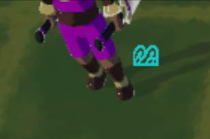
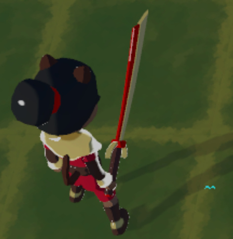
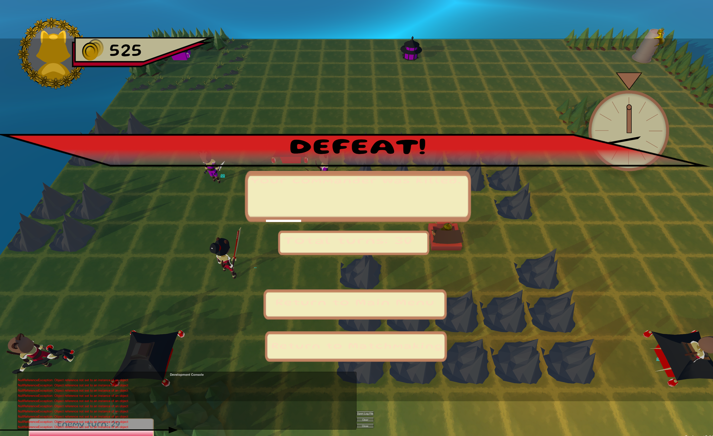
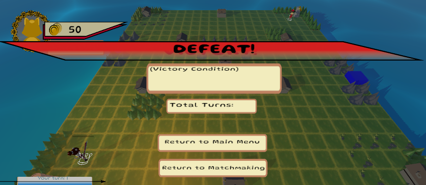

DevBlog #4: Polishing & Bug Fixes (11/19/2023)
Summary:
This devblog consisted of polishing our game, finalizing features, as well as bug finding and fixing.
Removing Unit Elemental Particle Effects & Refactoring:
When Project Multiply was created, there was originally a plan to incorporate an elemental system into the combat system. It was going to be pretty standard - fire, water, earth, and wind, each with the usual strengths and weaknesses against each other. When spawning a unit, the user would also select an element and the unit would spawn with a respectively colored icon beneath them as well as some small particles beneath them with the same color. However, as the project grew and changed, this idea took a backseat and began to make less sense as the development continued, so it ended up being cut.
I began by looking into the script that had the elemental particle system attached to it and removed the particle system. However, when I looked at the rest of the script, I noticed that there was a lot of old, unused elemental system code. As I looked into other parts of the codebase, I noticed more there as well. We even already had it tied to the battle system to calculate damage correctly. So, I took the time to refactor everything and remove any dependencies which took quite a bit longer than I expected it to.
 Right Click Exhausting Units Bug:
A bug report was listed on Jira that claimed right clicking directly on a unit would exhaust their movement instead of canceling their current action. However, when I tested this, I was not able to reproduce the issue. I noticed that others has also been working on similar functionality that also dealt with right clicking and canceling actions. So, after extensive testing, I assumed that someone else must have fixed this (either inadvertently or on purpose), so I marked it as complete and we have not run into the issue again since then.
Game Loading with Neither Player's Turn Active:
This has turned into a bit of a nagging issue. This was originally reported two weeks ago and I assigned the task to myself the night before our weekly meeting. I began debugging the code using Visual Studio and the Unity Debugger without any success. The next day at the playtest, I mentioned that I was working on it, but it seemed to have been fixed somehow, somewhere by someone, but no one knew who. So, I marked the task as complete and began working on other features. However, this was re-opened recently and it seems to be happening very rarely now, instead of every game. The issue is no longer assigned to me and, luckily, I have not run into this issue again since I attempted to fix it for quite a bit two weeks ago.
Match Outcome UI Screen Issues:
The UI screen that pops up after a match is complete, either declaring a victory or a defeat, was basically impossible to read due to some weird UI formatting, coloring, and hover effects. So, I went in and moved some things around and changed the colors up for better visibility. I also ran into quite a few merge issues which made this take longer than it should have, but I was able to work through them.
 Loading a Single Player Game After a Previous Game Breaks the AI:
I've looked into this issue quite a bit, but haven't yet found the source of the error. This has been much tougher than it should be because the AI was broken regardless in various places throughout the week which made it impossible to even complete a first game, win or lose, let alone a second game. I couldn't even correctly set up the debugger to step through the code because I couldn't get to the match finish scene in the current state of the master branch (for the match outcome UI work, I just enabled/disabled the panel). However, lots of fixes are being made to the AI and I look forward to narrowing down this bug once those fixes are made and I can actually step through the code, rather than guessing what might be happening.
Main Menu Scene Freezes After Creating a Lobby and Returning to It:
I was able to narrow this issue down pretty quickly, but unfortunately have not solved quite yet. It seems that we have a PlayFabControls script that is marked DontDestroyOnLoad. When initially starting the game, this script is attached to the main menu start functionality with all of its references correctly assigned. However, when exiting the room creation scene and going back to the main menu scene, this script is missing and all of its references are missing as well. I'm pretty confident that I'll be able to solve this quickly at the beginning of the next sprint now that I have located the source of the issue. I have attached a short video showing what I mean below in the mean time.
Bug Finding:
I found lots of bugs, sometimes I was looking for them and sometimes I was not. The notable ones were:
- When you right click on a valid movement tile, the unit moves there instead of canceling their action
- When your turn starts, sometimes you're not able to click on your unit to move or attack with them
- Unit actions UI pops up for all units at once, including enemy units
- AI was stalling for some unknown reason
- AI was stalling due to city meshes not being correctly assigned
- AI was stalling due to key locations not being correctly implemented
There was a lot of communication back and forth about some of these issues as they directly affected some of the tasks that I was working on, so I was in contact with multiple team members to figure out the best way to move forward and navigate the bugs that I was able to find.
Summary:
Overall, this week was a bit slower than usual, unfortunately, due to some difficult bugs in general, bugs unrelated to my tasks that made them harder to complete, and some bugs seeming to disappear at times and only show up in certain circumstances after we thought that they were solved. I'm excited with where I am currently at, though, and I think I should be able to finish up some pretty annoying bug fixes in the coming week. I'm also really excited to see all aspects of the game really beginning to come together and start to look more polished.
Two Week Time Breakdown:
- Studio Meetings: 5 Hours (one meeting ran very long & I had a separate, QA meeting after both weekly meetings)
- Documentation Reading (Confluence): 1 Hour
- Studio Communication: 1 Hour
- Bug Finding: 1 Hour
- Elemental System Removal & Refactor: 2 Hours
- Right Click Exhaust Bug: 0.5 Hours
- Match Loading with Neither Player's Turn Active Bug: 3 Hours
- Match Outcome UI Fixes and Merge Conflicts: 1 Hour
- Single Player AI Breaking After Previous Game Bug: 2 Hours
- Main Menu Scene Freezing After Room Creation: 1.5 Hours
- Total: 18 Hours